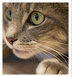
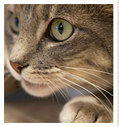

✦ Станьте волонтером
Самое важное в работе волонтера – это пристраивать животных в семьи. Вы можете прилагать огромное количество
сил для помощи животным в приюте, но всегда самым лучшим результатом ваших стараний будет переезд вашего
подопечного в новый дом, где о нем будут заботится каждый день всю его жизнь (а не 1-2 раза в неделю в дни
посещения волонтеров).
посещения волонтеров).
✦ Собака недели
Вихра, на удивление, спокойная собака, особенно учитывая, что она подросток.
Не шумная, не склонна лаять и поднимать панику.
✦ Кошка недели
Том – практически копия своего мультяшного тезки. Он такой же веселый,
шустрый и смышленый,умеет дружить и улыбается.


 
